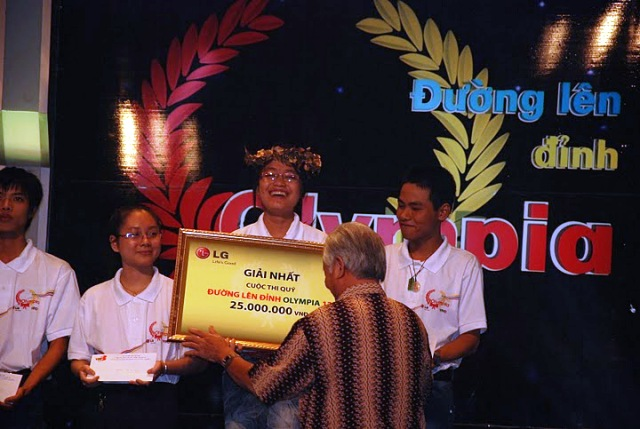

Học sinh Trần Lê Phương, trường THPT chuyên Nguyễn Bỉnh Khiêm đạt giải Nhất Quý 1- Đường lên đỉnh Olympia năm thứ 12

Lần cập nhật cuối lúc Thứ hai, 08 Tháng 10 2012 16:35 Viết bởi Administrator Thứ tư, 24 Tháng 8 2011 00:00
Tối 17/8/2011, tại Trường quay S9, Đài Truyền hình Việt Nam, em Trần Lê Phương, học sinh lớp 12 chuyên Hóa, trường THPT chuyên Nguyễn Bỉnh Khiêm - Quảng Nam đã xuất sắc giành giải Nhất Quý 1 cuộc thi Đường lên đỉnh Olympia năm thứ 12.

Em Phương đã vượt qua 3 bạn cùng thi với số điểm 225 (thí sinh về nhì được 155 điểm). Đây là chiến thắng rất có ý nghĩa đối với học sinh tỉnh Quảng Nam nói chung và trường THPT chuyên Nguyễn Bỉnh Khiêm nói riêng vì là lần đầu tiên học sinh Quảng Nam giành được thứ hạng này- là điểm cầu truyền hình đầu tiên của trận chung kết năm Đường lên đỉnh Olimpia lần thứ 12. Và đây cũng là món quà rất giá trị mà em Phương đã dành tặng cho Trường nhân dịp chào mừng ngày khai giảng năm học 2011-2012 tại ngôi trường mới khang trang vừa được tỉnh đầu tư xây dựng.
Đến vòng thi chung kết Đường lên đỉnh Olimpia lần thứ 12 năm 2012, Trường THPT chuyên Nguyễn Bỉnh Khiêm sẽ là một trong 4 đầu cầu truyền hình trực tiếp cổ động cho em Trần Lê Phương vinh dự thay mặt cho học sinh tỉnh Quảng Nam đặt chân lên đỉnh Olympia.
Tin mới hơn:
- 04/09/2013 07:00 - Tuyên dương khen thưởng học sinh đỗ thủ khoa và đạ…
- 02/04/2013 09:37 - GIẢI THỂ THAO HỌC SINH TRƯỜNG THPT CHUYÊN NGUYỄN …
- 26/12/2012 09:24 - Triển khai công tác giáo dục An toàn giao thông, t…
- 31/10/2012 18:15 - Công đoàn trường tổ chức sinh hoạt giao lưu kỉ niệ…
- 20/09/2012 15:30 - Khẩu hiệu có đem lại hiệu quả giáo dục?